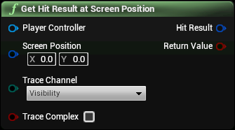

Does a collision query at the provided position on the screen.
|
Player Controller
Player Controller Object Reference
|
Player Controller to use |
|
Screen Position
Vector 2D Structure
|
Screen position to trace at |
|
Trace Channel
ETraceTypeQuery Enum
|
Trace collision channel to use |
|
Trace Complex
Boolean
|
Should trace complex collision |
|
Hit Result
Hit Result Structure
|
Result of trace |
|
Return Value
Boolean
|
True or false depending on hit |